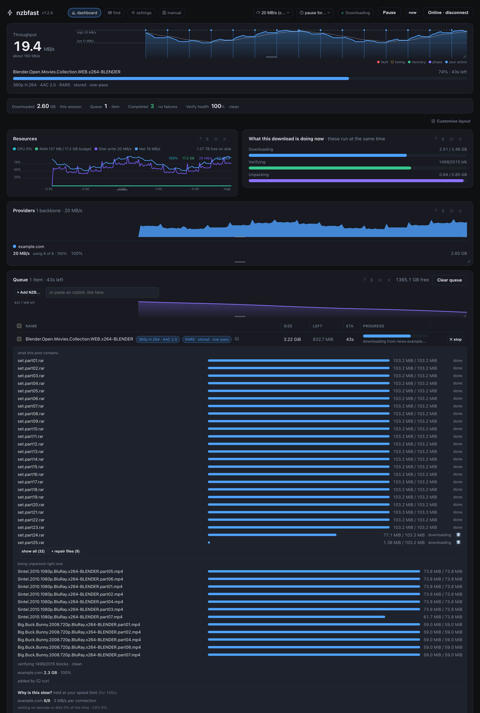
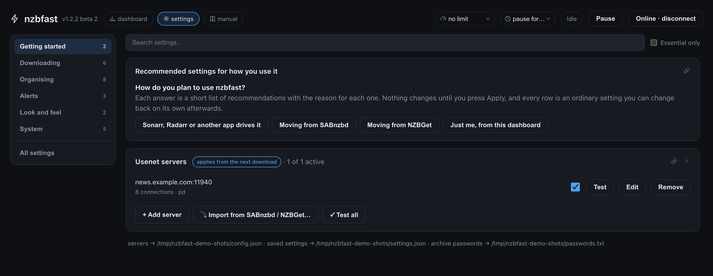
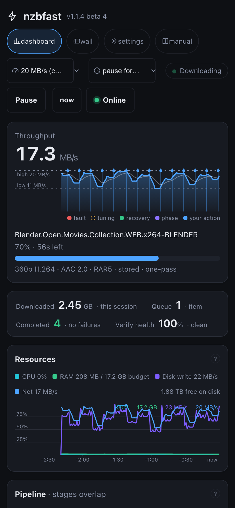

النسخة المختصرة في الأعلى، والتفاصيل الكاملة في الأسفل.
{{pw}}، وواجهة *arr، ثم أي ملاحظة نصية قصيرة منشورة بجوار الملفات، وإن لم يجد فأسماء الإصدار والملفات نفسها. ويعيد هذا البحث عند كل مستوى: سلسلة تخبّئ كلمة مرور كل طبقة داخل الطبقة التي فوقها - كلمة مرور مختلفة عند كل مستوى - تُفتح حتى القاع دون أن تكتب شيئًا. وما يتبقى فعلًا يمرّ عبر فك القفل 🔑 في لوحة التحكم: يفك القفل في الخلفية ثم يرتّب كالمعتاد.Show/Season NN/Show - S01E02.ext.


serve --open.nzbfast setup، أو اكتشاف تلقائي لتهيئة SABnzbd/NZBGet موجودة. أول تنزيل في أقل من دقيقتين.